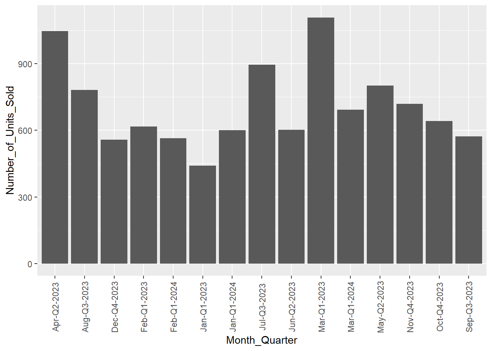

pacman::p_load(ggdist, ggridges, ggthemes,
gganimate, ggrepel, ggiraph,
plotly, patchwork, colorspace,
tidyverse)Take-home Exercise 1
Creating data visualisation beyond default: Private residential market analysis in Singapore for Q1 2024.
1 Introduction
1.1 Background
Singapore’s residential property market is branched into two primary sectors: public and private housing.Public housing, which is subsidised by the government, primarily caters to the essential housing needs of the general populace, specifically for households with a monthly income of S$14,000 or less. In contrast, households earning more than this income threshold generally turn to the private residential market. Moreover, given Singapore’s limited land area with it being one of the smallest countries in the world, real estate remains perpetually high in demand. This tends to bring about challenges due to the competitive nature of securing housing in either the public or private residential market.
1.2 Task and aims
The task for this exercise aims to elucidate the dynamics of the private residential market and sub-markets in the 1st quarter of 2024 as a graphical editor of a media company. This will be done with a couple of data visualizations in which they will are assumed to be consumed by the general public. From the visualisation we aim to uncover:
- the distributions of property prices alongside property type, and
- any plausible relationship between these factors with their planning regions
2 Getting Started
2.1 Installing and loading the required libraries
For this exercise, beside tidyverse, five other R packages will be used. They are:
- ggdist: a ggplot2 extension spacially designed for visualising distribution and uncertainty.
- ggridges: a ggplot2 extension specially designed for plotting ridgeline plots.
- ggthemes: an R package which provides some extra themes, geoms, and scales for ‘ggplot2’.
- gganimate: a ggplot extension for creating animated statistical graphs.
- ggrepel: an R package provides geoms for ggplot2 to repel overlapping text labels.
- patchwork: an R package for preparing composite figure created using ggplot2.
- colorspace: an R package that provides a broad toolbox for selecting individual colors or color palettes, manipulating these colors, and employing them in various kinds of visualisations.
- tidyverse: a family of modern R packages specially designed to support data science, analysis and communication tasks including creating static statistical graphs.
The following code chunk below uses p_load() of pacman package to check that the required R packages have been installed. If they are, the libraries will be called into R.
2.2 Data Wrangling
The data for this exercise is the transaction data of Real Estate Information System (REALIS) which is obtained from Urban Redevelopment Authority (URA) which collects comprehensive and detailed property data under its REALIS section. The data range is dated from 1st January 2023 to 31st March 2024 in csv format and comes in 5 separate csv files for each corresponding quarter.
2.2.1 Importing REALIS Data
The code chunk below imports the quarterly transaction data from REALIS by using the read_csv() function of readr package. Each dataset is labelled accordingly to their respective quarter(q)(1,2,3,4)_year(yy).
q1_23 <- read_csv("data/ResidentialTransaction20240308160536.csv")
q2_23 <- read_csv("data/ResidentialTransaction20240308160736.csv")
q3_23 <- read_csv("data/ResidentialTransaction20240308161009.csv")
q4_23 <- read_csv("data/ResidentialTransaction20240308161109.csv")
q1_24 <- read_csv("data/ResidentialTransaction20240414220633.csv")The datasets are in a tibble dataframe with a total of 26,806 observations (rows) across 21 variables (columns). Each observation (row) corresponds to a property transaction in the private residential market, while the variables (columns) corresponds to information ranging from the transacted price, type of sale, property type for example.
With a substabtial large dataset, the individual datasets will be merged before we peform analysis. The rbind() function in the base package is used to combine the five tibble data frames into a single tibble data frame, private_property_data.
private_property_data <- rbind(q1_23, q2_23, q3_23, q4_23, q1_24)An aggregate of all property types for units.
aggregate(private_property_data$`Number of Units`, by=list(Category=private_property_data$`Property Type`), FUN=sum) Category x
1 Apartment 10785
2 Condominium 10744
3 Detached House 236
4 Executive Condominium 3534
5 Semi-Detached House 527
6 Terrace House 11102.2.2 Checking for duplicates
Given that dataset from URA is expected to be clean we will still proceed with some due diligence checks for duplicates. Using the duplicated() function we can observe if there are any duplicates in the tibble data frame.
private_property_data[duplicated(private_property_data), ]# A tibble: 0 × 21
# ℹ 21 variables: Project Name <chr>, Transacted Price ($) <dbl>,
# Area (SQFT) <dbl>, Unit Price ($ PSF) <dbl>, Sale Date <chr>,
# Address <chr>, Type of Sale <chr>, Type of Area <chr>, Area (SQM) <dbl>,
# Unit Price ($ PSM) <dbl>, Nett Price($) <chr>, Property Type <chr>,
# Number of Units <dbl>, Tenure <chr>, Completion Date <chr>,
# Purchaser Address Indicator <chr>, Postal Code <chr>,
# Postal District <chr>, Postal Sector <chr>, Planning Region <chr>, …Results confirm that there are no duplicated records found.
2.2.3 Data Type Conversion and Transformation
Creating New Columns (Month)
data_overall <- private_property_data %>%
mutate(Month = month(dmy(`Sale Date`), label = TRUE, abbr = FALSE),
Quarter = paste0("Q", quarter(dmy(`Sale Date`)), "-", year(dmy(`Sale Date`))))2.2.4 Data Overview
Glimpse of data
The glimpse() function will be utilised to have an overview of the dataset we have
glimpse(data_overall)Rows: 26,806
Columns: 23
$ `Project Name` <chr> "THE REEF AT KING'S DOCK", "URBAN TREASU…
$ `Transacted Price ($)` <dbl> 2317000, 1823500, 1421112, 1258112, 1280…
$ `Area (SQFT)` <dbl> 882.65, 882.65, 1076.40, 1033.34, 871.88…
$ `Unit Price ($ PSF)` <dbl> 2625, 2066, 1320, 1218, 1468, 1767, 1095…
$ `Sale Date` <chr> "01 Jan 2023", "02 Jan 2023", "02 Jan 20…
$ Address <chr> "12 HARBOURFRONT AVENUE #05-32", "205 JA…
$ `Type of Sale` <chr> "New Sale", "New Sale", "New Sale", "New…
$ `Type of Area` <chr> "Strata", "Strata", "Strata", "Strata", …
$ `Area (SQM)` <dbl> 82.0, 82.0, 100.0, 96.0, 81.0, 308.7, 42…
$ `Unit Price ($ PSM)` <dbl> 28256, 22238, 14211, 13105, 15802, 19015…
$ `Nett Price($)` <chr> "-", "-", "-", "-", "-", "-", "-", "-", …
$ `Property Type` <chr> "Condominium", "Condominium", "Executive…
$ `Number of Units` <dbl> 1, 1, 1, 1, 1, 1, 1, 1, 1, 1, 1, 1, 1, 1…
$ Tenure <chr> "99 yrs from 12/01/2021", "Freehold", "9…
$ `Completion Date` <chr> "Uncompleted", "Uncompleted", "Uncomplet…
$ `Purchaser Address Indicator` <chr> "HDB", "Private", "HDB", "HDB", "HDB", "…
$ `Postal Code` <chr> "097996", "419535", "269343", "269294", …
$ `Postal District` <chr> "04", "14", "27", "27", "28", "19", "10"…
$ `Postal Sector` <chr> "09", "41", "26", "26", "79", "54", "27"…
$ `Planning Region` <chr> "Central Region", "East Region", "North …
$ `Planning Area` <chr> "Bukit Merah", "Bedok", "Yishun", "Yishu…
$ Month <ord> January, January, January, January, Janu…
$ Quarter <chr> "Q1-2023", "Q1-2023", "Q1-2023", "Q1-202…3 Exploratory Data Anaylsis
3.1 Distribution of Private Residential Market (1st quarter of 2023 - 1st quarter of 2024)
Show the code
ggplot(data=private_property_data,
aes(x= `Unit Price ($ PSM)`,
fill = `Property Type`)) +
geom_histogram(bins=20,
color="grey30")
Observations: The overlaid histogram illustrates the unit price per square meter ($ PSM) distribution across different property types in Singapore’s private residential market. Apartments and condominiums are predominant, with a high frequency of lower-priced units, indicative of a strong market presence and potential affordability. The executive condominiums show fewer transactions but at a more moderate price range, suggesting a niche market. Detached houses, while less frequent, have transactions across a wider price range, signaling diverse offerings from affordable to luxury segments. Semi-detached and terrace houses exhibit a similar pattern, though terrace houses skew towards lower prices, possibly reflecting market preference for affordability.
data <- data_overall
# Check the first few entries of the Sale Date column to understand its format
head(data$`Sale Date`)[1] "01 Jan 2023" "02 Jan 2023" "02 Jan 2023" "02 Jan 2023" "03 Jan 2023"
[6] "03 Jan 2023"# Assuming the format is day/month/year, convert it to a Date object
data <- data %>%
mutate(Sale_Date = dmy(`Sale Date`))
# Check if the conversion was successful
str(data$Sale_Date) Date[1:26806], format: "2023-01-01" "2023-01-02" "2023-01-02" "2023-01-02" "2023-01-03" ...data <- data %>%
mutate(
Month = month(Sale_Date, label = TRUE, abbr = TRUE), # Use abbr = TRUE for abbreviated month names
Quarter = paste0("Q", quarter(Sale_Date)),
Year = year(Sale_Date),
Month_Quarter = paste(Month, Quarter, Year, sep = "-")
)condo_data <- data %>%
filter(`Property Type` == "Condominium") %>%
group_by(Month_Quarter) %>%
summarize(Number_of_Units_Sold = n(), .groups = 'drop')# Check the contents of the summarized data
head(condo_data)# A tibble: 6 × 2
Month_Quarter Number_of_Units_Sold
<chr> <int>
1 Apr-Q2-2023 1047
2 Aug-Q3-2023 782
3 Dec-Q4-2023 558
4 Feb-Q1-2023 617
5 Feb-Q1-2024 564
6 Jan-Q1-2023 441# Plot without interactivity
ggplot(condo_data, aes(x = Month_Quarter, y = Number_of_Units_Sold)) +
geom_col() +
theme(axis.text.x = element_text(angle = 90, vjust = 0.5))
# Interactive plot with ggiraph
interactive_bar_chart <- ggplot(condo_data, aes(x = Month_Quarter, y = Number_of_Units_Sold,
tooltip = paste(Month_Quarter, Number_of_Units_Sold))) +
geom_bar_interactive(stat = "identity") +
labs(title = "Number of Condominium Units Sold", x = "Month and Quarter", y = "Number of Units Sold") +
theme_minimal() +
theme(axis.text.x = element_text(angle = 90, hjust = 1))
# Convert the ggplot object to an interactive plot with girafe
interactive_plot <- girafe(ggobj = interactive_bar_chart)
print(interactive_plot)Show the code
ggplot(data=private_property_data,
aes(x = `Property Type`,
colour = `Property Type`,)) +
geom_density()Observations: This density plot visualizes the concentration of different property types in the private residential market. Apartments show a high density at lower price points, indicating commonality and affordability. Detached houses exhibit a peak at a higher price range, suggesting exclusivity and higher valuation, while other property types display varied densities and price ranges.
3.2 Relationship between Property Type and Unit Price ($ PSM) (1st quarter of 2024)
ggplot(q1_24,
aes(x = `Unit Price ($ PSM)`,
y = `Property Type`,
fill = factor(stat(quantile))
)) +
stat_density_ridges(
geom = "density_ridges_gradient",
calc_ecdf = TRUE,
quantiles = 4,
quantile_lines = TRUE) +
scale_fill_viridis_d(name = "Quartiles") +
theme_ridges()Observations: Based on the plot, it can be observed that the various property types generally resemble a normal distribution. With reference from the quartile lines, the Unit Price Per Square Metre ($ PSM) for Apartments tend to be higher than that for the other remaining five property types; while the ($ PSM) of Executive Condominiums (ECs) tend to be lower than the other property types. This corresponds to the fact that ECs while built by private developers with the facilities of a Condominium are sold as public housing via the Housing Development Board (HDB) which receive some government subsidies. ECs are also catered to middle-income Singaporeans / Singapore Permanent Residents who do not qualify for a HDB flat due to the income ceilling cap but find private condominiums out of their budget.
3.3 Comparing Planning Region and Unit Price ($ PSM) (1st quarter of 2024)
ggplot(q1_24,
aes(x = `Unit Price ($ PSM)`,
y = `Planning Region`,
fill = factor(stat(quantile))
)) +
stat_density_ridges(
geom = "density_ridges_gradient",
calc_ecdf = TRUE,
quantiles = c(0.025, 0.975)
) +
scale_fill_manual(
name = "Probability",
values = c("#FF0000A0", "#A0A0A0A0", "#0000FFA0"),
labels = c("(0, 0.025]", "(0.025, 0.975]", "(0.975, 1]")
) +
theme_ridges()Observations: The ridgeplot displays the distribution of unit prices per square meter ($ PSM) for private residential properties across different planning regions in Singapore. Each layer represents one planning region, with the Central Region at the bottom and the West Region at the top.
The peaks of each layer indicate the most common unit prices in each region. The Central Region shows a wide distribution with a significant peak, suggesting a large variation in prices, but with a concentration of properties around a particular price point which could be indicative of a prevalent market value for that region. The North East and East Regions display narrower distributions, signifying less variability in unit prices.
The tails of the distributions, marked in red and blue, denote the extreme values (outliers) where the probability of unit prices falls into the lowest or highest 2.5%. The presence of these outliers, especially in the Central Region, may suggest private properties or areas of unusually high or low value.
4 Conclusion and Findings
From this data visualisation exercise, data wrangling and visualization of the data was carried out to explore the relationship of private residential market price with factors such as Planning Region and Property Type. The key findings are:
- Apartments and condominiums are prevalent in the lower quartiles, suggesting affordability, while prices for detached houses are spread across all quartiles, indicating a wide price range from moderate to luxury units.
- Unit prices in the Central Region are generally higher and more varied, while prices in other regions are more clustered, indicating less diversity in the housing market value.
- A possible reflection of a higher demand and a wider range of property types in the Central Region, in contrast to more uniform residential areas in other regions.
To provide a conclusion with the findings, it is worthwhile to note that the exercise primarily focused on visuals and it would be highly beneficial to also use statistical tests in tandem to support all the findings. Furthermore, not the entire dataset was utilised and visualisation was mainly done up for the period of: 1st quarter of 2024. Some of these variables could also bring out more findings such as the Tenure of the unit and the Purchaser Address Indicator which could bring up additional insights for people to make more informed decisions when intending to purchase a property in the private residential market. All in all, this exercise has been a good practice of utilising ggplot fundamentals; but even more enhancements could be done such as using Animated Statistical Graphics to help the audiece connect better if this was a presentation to being insights on how trends have shifted for various properties using visual animation.